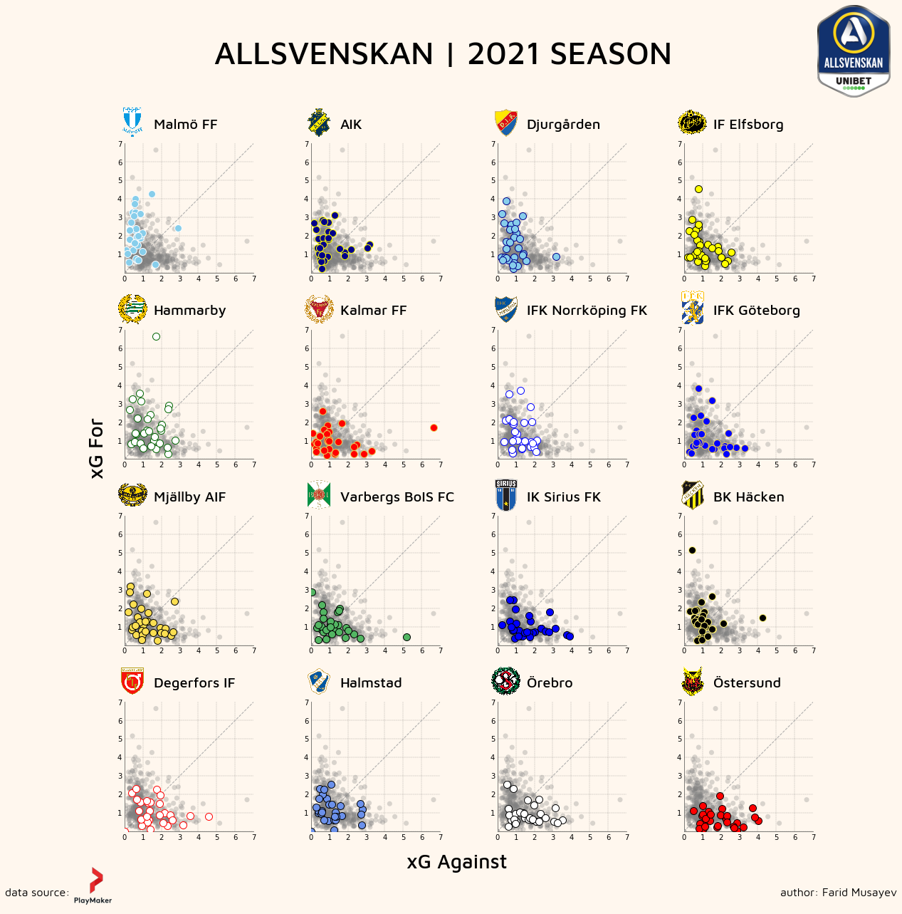

# import required libraries
import os
import json
import numpy as np
import pandas as pd
import matplotlib.pyplot as plt
import matplotlib_inline
from matplotlib.font_manager import FontProperties
from matplotlib import image
from matplotlib.offsetbox import OffsetImage, AnnotationBboxAllsvenskan 2021
Object-oriented plotting with matplotlib
Package Prerequisites
Data Preparation
# export required data frame
df = pd.read_csv("data/refined/merged_match_results.csv")
# find for each team xG For and xG against
all_xg_for = pd.concat([df['home_np_xg'], df['away_np_xg']])
all_xg_against = pd.concat([df['away_np_xg'], df['home_np_xg']])Plot Extras
# define a dictionary of colors for each team
team_color = {'Malmö FF':['skyblue', 'white'],
'AIK':['darkblue', 'yellow'],
'Djurgården':['skyblue', 'darkblue'],
'IF Elfsborg':['yellow', 'black'],
'Hammarby':['white', 'darkgreen'],
'Kalmar FF':['red', '#EBCD57'],
'IFK Norrköping FK':['white', 'blue'],
'IFK Göteborg':['blue', '#EBCD57'],
'Mjällby AIF':['#FCDF51', 'black'],
'Varbergs BoIS FC':['#53B663', 'black'],
'IK Sirius FK':['blue', 'black'],
'BK Häcken':['black', '#FFF275'],
'Degerfors IF':['white', 'red'],
'Halmstad':['#6B91EB', 'black'],
'Örebro':['white', 'black'],
'Östersund':['red', 'black']}
# create a list of teams, according to their ranking, to iterate over
team_ranks = ['Malmö FF', 'AIK', 'Djurgården', 'IF Elfsborg', 'Hammarby',
'Kalmar FF', 'IFK Norrköping FK', 'IFK Göteborg', 'Mjällby AIF',
'Varbergs BoIS FC', 'IK Sirius FK', 'BK Häcken', 'Degerfors IF',
'Halmstad', 'Örebro', 'Östersund']Design
# list of club logo paths to iterate over
files = os.listdir('images/club_logos/')
fig, ax = plt.subplots(nrows = 4, ncols = 4, figsize = (18, 18),
gridspec_kw={'hspace': 0.44})
# figure face color equal to axis face color
fig.set_facecolor("#FFF7EE")
# Font Properties:
# (x, y) axis labels
label_fps = FontProperties(family = 'Maven Pro', size = 28, weight = 'medium')
# each plot title
ax_fps = FontProperties(family = 'Maven Pro', size = 20, weight = 'medium')
# figure title
fig_fps = FontProperties(family = 'Maven Pro', size = 45, weight = 'medium')
# data source:
ds_fps = FontProperties(family = 'Maven Pro', size = 16)
ind = 0
for i in range(4):
for j in range(4):
# grid settings
ax[i, j].grid(color='#62625F', ls = '-.', lw = 0.25, zorder = 0)
# face color of axis
ax[i, j].set_facecolor("#FFF7EE")
# plot dashed line
x = np.array([0, 7])
y = np.array([0, 7])
ax[i, j].plot(x, y, c = 'darkgray', ls = '--', lw = 1, zorder = 3)
# data filtering steps:
# 1.take a team from a list and filter data frame 'team_df'
team_df = df[(df['home'] == team_ranks[ind]) | (df['away'] == team_ranks[ind])]
# 2. filter non-penalty xG for
team_df[team_df['home'] == team_ranks[ind]]['home_np_xg']
team_df[team_df['away'] == team_ranks[ind]]['away_np_xg']
xg_for = pd.concat([team_df[team_df['home'] == team_ranks[ind]]['home_np_xg'],
team_df[team_df['away'] == team_ranks[ind]]['away_np_xg']])
# 3. filter non-penalty xG against
team_df[team_df['home'] == team_ranks[ind]]['away_np_xg']
team_df[team_df['away'] == team_ranks[ind]]['home_np_xg']
xg_against = pd.concat([team_df[team_df['home'] == team_ranks[ind]]['away_np_xg'],
team_df[team_df['away'] == team_ranks[ind]]['home_np_xg']])
ax[i, j].scatter(all_xg_against, all_xg_for, c = 'gray', alpha = 0.3, s = 50, edgecolor = 'none', zorder = 3)
ax[i, j].scatter(xg_against, xg_for, s = 100, c = team_color[team_ranks[ind]][0],
edgecolor = team_color[team_ranks[ind]][1], zorder = 3)
# set limit for x and y axis
ax[i, j].set_xlim(0, 7)
ax[i, j].set_ylim(0, 7)
ax[i, j].set_xticks(np.arange(0, 8, 1))
ax[i, j].set_xticks(np.arange(0, 8, 1))
ax[i, j].set_aspect('equal')
# remove tick lines from both axis
ax[i, j].tick_params(length = 0)
# remove '0' on y-axis
ax[i, j].yaxis.get_major_ticks()[0].label1.set_visible(False)
# remove top and right spines
ax[i, j].spines[['top', 'right']].set_visible(False)
# spines color
spines_color = '#62625F'
ax[i, j].spines['bottom'].set_color(spines_color)
ax[i, j].spines['top'].set_color(spines_color)
ax[i, j].spines['right'].set_color(spines_color)
ax[i, j].spines['left'].set_color(spines_color)
# font dictionary
font3 = {'family': 'monospace', 'weight': 'bold', 'size': 14}
# title for each plot
ax[i, j].set_title(team_ranks[ind], loc = 'left', x = 0.225, y = 1.08, fontproperties = ax_fps)
# remove topmost and rightmost gridlines:
# retrieve all x and y gridlines
y_gridlines = ax[i, j].get_ygridlines()
x_gridlines = ax[i, j].get_xgridlines()
# select topmost and rightmost and remove them
y_last = y_gridlines[-1]
y_last.set_visible(False)
x_last = x_gridlines[-1]
x_last.set_visible(False)
# club logo settings:
club_logo = image.imread("images/club_logos/" + files[ind])
# add into image box
club_logo = OffsetImage(club_logo, zoom = 0.04)
# assign axis to image box
club_logo.image.axes = ax[i, j]
# set coordinates
ab = AnnotationBbox(club_logo, xy = (0.065, 1.16), xycoords = 'axes fraction', frameon = False)
# add to axis
ax[i, j].add_artist(ab)
# update index for a list of teams
ind = ind + 1
# league logo settings:
league_img = image.imread("images/other_logos/allsvenskan_logo.png")
league_logo = fig.add_axes([0.88, 0.88, 0.1, 0.1])
league_logo.set_axis_off()
league_logo.imshow(league_img, aspect = "equal")
# figure title and labels
fig.supxlabel('xG Against', fontproperties = label_fps, y = 0.04)
fig.supylabel('xG For', fontproperties = label_fps, x = 0.1)
fig.suptitle('ALLSVENSKAN | 2021 SEASON', x = 0.485, y = 0.94, fontproperties = fig_fps)
# annotations and logo for data source
fig.text(0.01, 0.015, r"data source:", fontproperties = ds_fps)
ds_img = image.imread("images/other_logos/plm.png")
ds_logo = fig.add_axes([0.08, 0.001, 0.05, 0.05])
ds_logo.set_axis_off()
ds_logo.imshow(ds_img, aspect = "equal")
# author annotations:
fig.text(0.85, 0.015, r"author: Farid Musayev", fontproperties = ds_fps)
# create a space for a title and left/right axis
fig.subplots_adjust(bottom = 0.085, top = 0.83)
plt.show()
# save figure
fig.savefig('xg_subplots.png', dpi = 350, transparent = False)
To view this plot in a high resolution, please follow this link.
{kind=link}